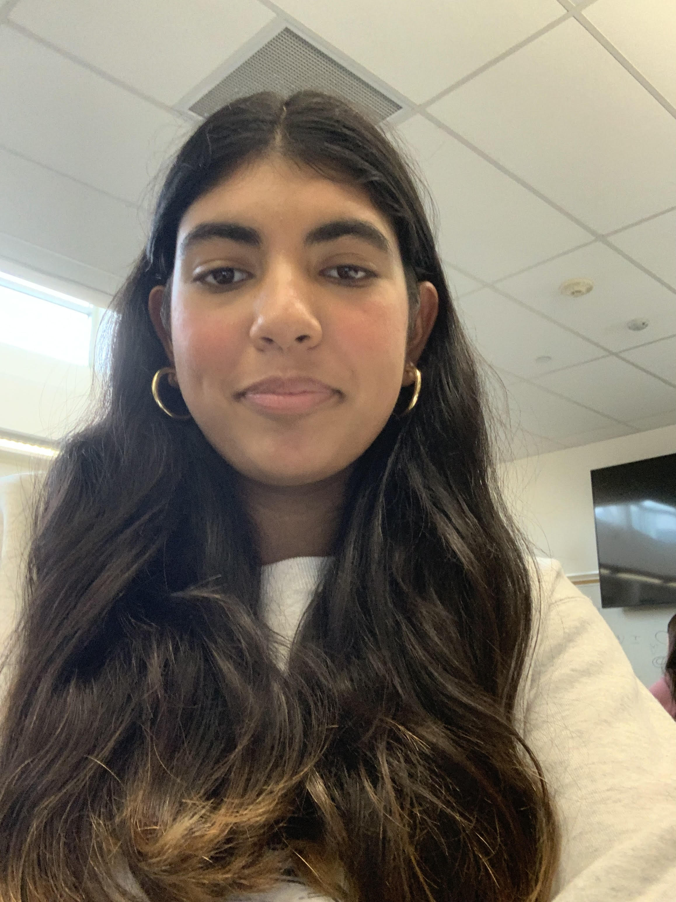

About Me
My name is Samreen and I am an high school student interested in coding and learnign the fundamentals of artificial intelligence (AI).
I am advanced in languages like HTML, Javascript, and CSS as well as proficent in Python.
I have many intrests but most of them lie in coding and AI. I became fassinated with programming because of my desire to know how things work. I love to create and experiment with different styles in coding and create amazing projects. Currently, I am a high school student and spend a lot of my time exploring the possibilities of AI.
I started coding from the starting using block based styles and simple projects. When I discovered more advanced coding, I learned the basics of HTML and soon after became proficient in HTML, Java Script, and CSS. When I mastered the basics, I moved on to Python a more challenging language, that I understood and still keep on expanding my knowledge in. Though I like to code, I also like to understand the topics of AI and how to use it. I learned about many machine learning techniques and became hooked.
Looking ahead, I hope to contribute my ieas to the computer science field and apply every bit of knowledge I have. I am passonate about understanding how AI and coding can make the technology world more faster and sufficent as soon as possible. I am very excited about the amazing opportunities ahead. /p>